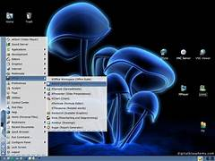

- Software de sistema
- Software de alicação
- Software de programação
- Software de segurança
- Software de bases de dados
- Software de redes
- Software educacional
- Software de entretenimento
- Software de gestão empresarial
- Software de desing assistido por computador (CAD)
O que é um software?
Software é um conjunto de instruções que devem ser seguidas e executadas por um mecanismo, seja ele um computador ou um aparato eletromecânico. É o termo usado para descrever programas, apps, scripts, macros e instruções de código embarcado diretamente (firmware), de modo a ditar o que uma máquina deve fazer. Todo programa em seu computador, celular, tablet, smart TV, console de videogame, set-top box e etc. é um software, seja ele um editor de textos, um navegador, um editor de áudio ou vídeo, um jogo, um app de streaming e por aí vai.
Software de sistema
Os softwares de sistema são os responsáveis pelos sistemas operacionais de todos os dispositivos e auxiliam os usuários em seu uso, de forma visual e através de comandos. São extremamente complexos em sua construção.
Windows, Android, iOS.

Software de aplicação
O software de aplicação é criado, em regra, para executar tarefas específicas tal como o processamento de texto, reprodução de áudio. Ao contrário do software de sistema, estas tarefas não são indispensáveis ao normal funcionamento do computador e que só são executa- das a pedido do utilizador.
O tipo mais conhecido, os softwares de aplicação são os famosos programas, que são utilizados para realizar tarefas do cotidiano como ouvir música, vídeos, criar e editar planilhas e arquivos. Exemplos: Microsoft Word, Spotify, Calculadora, Instagram, TikTok.
Software de programação
Softwares de programação são softwares que permitem que programadores criem outros programas, através do uso de linguagens de programação. Eles fornecem ferramentas e soluções para testar, compartilhar, gerenciar e até de facilitar a escrita dos códigos.
Exemplos: Word, Exel, Paint, Bloco de notas, calculadora. SOFTWARE DE PROGRAMAÇÃO: são softwares usados para criar outros programas, a parir de uma linguagem de programação, como Java, PHP, Pascal, C+, C++, entre outras.
Software de segurança ou VMS (Sigla em inglês para Video Management System) é uma solução de vídeo monitoramento profissional formada por servidores e softwares para gravação e gerenciamento de vídeo. Essas soluções de vídeo-segurança são baseadas no padrão IP e estão diretamente relacionadas à área de sistemas CFTV (circuito fechado de TV).
ntiphishing: para bloquear sites perigosos contra roubo de dados. Antispyware: para proteger seus dados privados contra vazamento na Web. Antirransomware: para impedir que o ransomware bloqueie seu dispositivo. Firewall: para monitorar e bloquear tráfego de rede indesejado e suspeito. Gerenciador de senhas: para criar e armazenar senhas fortes. VPN (Rede Privada Virtual): para navegar na Web de forma anônima. Controle dos pais: para restringir o acesso de seus filhos a conteúdo impróprio.

Software de bases de dados
O software de banco de dados às vezes também é conhecido como "sistema de gerenciamento de banco de dados" (DBMS). O software de banco de dados simplifica o gerenciamento de dados, permitindo que os usuários armazenem dados em um formulário estruturado e depois os acessem.
O Microsoft SQL Server é uma plataforma abrangente que fornece sofisticadas ferramentas de gerenciamento de dados e integração de Business Intelligence. Mesmo começando um tanto tardiamente nesse mercado, a Microsoft realizou significativos investimentos estratégicos para competir, de igual para igual, com a Oracle e o DB2.
Software de redes
Software de rede é um termo extremamente amplo para uma gama de softwares voltados ao design e implementação de redes modernas. Vários tipos de software de rede suportam a criação, calibração e operação de redes.
Linux É uma sistema operacional Unix, multiusuário, multitarefa e multiprocessado, de livre distribuição, disponível para equipamentos x86 (Intel e compatíveis), Motorola 68K, Digital Alpha, Sparc, Mips e PowerPC, entre outros. É uma implementação aderente ao POSIX-Portable Operating System Interface, ou seja segue as indicações do IEEE para sistema abertos e portabilidade. O núcleo do Linux não utiliza código proprietário de qualquer espécie, sendo a maior parte de seu desenvolvimento feito sob o projeto GNU da Free Software Foundation, o que torna obrigatório que binários e fontes sejam distribuídos conjuntamente. Ele tanto pode ser um SOR quanto um sistema operacional local para microcomputadores.
Software educacional
O software educacional é uma solução completa para instituições de ensino de todos os portes e segmentos. Trata-se de um sistema que oferece controle total sobre as atividades da instituição e de seus colaboradores.
O software de PDF é um tipo de software educacional que está se tornando parte integral da educação. Os arquivos em PDF são versáteis e não dependem de nenhum sistema operacional ou outro software. Como tal, eles podem ser transferidos entre várias plataformas. O software de PDF permite editar, abrir, converter PDF e muito mais. E com o software certo, você pode manipular facilmente seus documentos.
Software de entretenimento
Software de entretenimento é qualquer software que apóie um hobby ou forneça uma forma de diversão. O software de entretenimento inclui videogames, vídeos e qualquer outro software que o usuário considere agradável.
Microsoft Word Google Chrome Windows Movie Maker Audácia Adobe Photoshop Projeto Microsoft Avast MSN Messenger
Software de gestão empresarial
O software de gestão empresarial ocupa uma posição central nas organizações modernas: o painel de controle que concentra todos os dados, documentos e processos do negócio. Com ele, é possível integrar todas as áreas da empresa, automatizar tarefas e acelerar as rotinas diárias, conquistando muito mais eficiência.
ERP é a sigla para Enterprise Resource Planning. Em português, esse nome aparece comumente como Sistema Integrado de Gestão Empresarial. Como o nome indica, é um programa que permite controlar e acompanhar todos os processos de uma empresa.
Software de desing assistido por computador (CAD)
CAD (Computer Aided Design) ou em português, Desenho Assistido por Computador é o termo utilizado ao se referir a softwares que auxiliam na elaboração de desenhos/projetos no meio digital, através de gráficos produzidos em computadores. Popularmente conhecido e utilizados por arquitetos e engenheiros das diversas industrias presente no mercado os softwares CAD são capazes de produzir geometrias em 2D ou 3D, através das coordenadas X, Y e Z.
AutoCAD. Inventor CAM. SketchUp. SolidWorks. 3DS Max. Maya. Revit. Civil 3D.
Windows 1.0 (1985)
A primeira versão do SO foi lançada no longínquo ano de 1985 e era mais uma extensão do MS-DOS do que um software completo. Ele se caracterizava pelo modelo colorido na tela e aplicações como bloco de notas e até um Paint. Ele não permitia a sobreposição de janelas, por exemplo, e por isso todas elas ficavam expostas lado a lado.
Windows 2.0 (1987)
O Windows 2.0 chegou ao mercado em dezembro de 1987 e, tanto como o seu predecessor quanto o seu sucessor, usava uma estrutura de computação em 16 bits. Ele apresentou melhorias na interface, como a possibilidade de sobrepor janelas de programas, atalhos de teclado e suporte a VGA.
Windows 3.0 (1990)
Sucessor do Windows 2.0, que trouxe poucas alterações em relação ao primeiro, o 3.0 foi lançado em 1990 com melhorias de memória. Ele também se destacou pelo visual mais limpo, melhor organização de arquivos e apresentou ao mundo o Campo Minado, que viria a ser um destaque nos computadores pré-internet.

Windows 95 (1995)
Considerado um dos sistemas operacionais mais importantes da história, o Windows 95 abriu uma nova era para a Microsoft. Ele foi programado em 32 bits e trouxe melhorias que incluíam o sistema plug and play, recursos de acessibilidade e o navegador Internet Explorer.
Windows 98 (1998)
O Windows 98 aprofundou a revolução que o seu antecessor começou. Disponibilizado em junho de 1998, ele era mais estável, tinha suporte a mais de um monitor e componentes USB, particionamento do HD, serviço Outlook de e-mail, modo de hibernação e mais. No mundo todo, ele foi o primeiro contato de muita gente com o PC, já que ainda estava em muitas máquinas mesmo após a virada do século.
Windows 2000 (2000)
O Windows 2000 foi lançado em fevereiro de 2000 e consolidou o fim definitivo da nomenclatura "NT". O Windows NT, que começou a ser disponibilizado em 1993, era voltado para usuários corporativos, servidores e workstation, e não para o público geral. Por causa disso, sua menção é importante, além de ter trazido recursos importantes e novos sistemas de segurança.

Windows XP (2001)
O Windows XP foi lançado em outubro de 2001 e à época era bastante inovador, principalmente no quesito visual. Ele apostou em um menu Iniciar verde e barras azuis que se tornaram bastante populares entre os usuários. Entre as várias novidades que ele apresentou em suas versões, havia a opção de alternância de contas de usuários sem fechar arquivos abertos, suporte para DSL e wireless. Ele popularizou programas do Windows Media Player, já que CDs poderiam ser lidos pelos drives e tocados no programa. Seu wallpaper, uma fotografia de planícies na Califórnia, tornou-se uma das imagens mais famosas da era da internet.
Windows Vista (2006)O Windows Vista teve um hiato bastante grande em relação ao anterior, se desconsiderarmos as atualizações e novas versões do XP. Ele foi lançado em novembro de 2006, apresentando uma nova estética de janelas transparentes e melhores recursos de segurança. Apesar disso, ele não foi tão bem recepcionado porque muitos usuários reclamavam que ele deixava o computador lento, o que fez muita gente continuar usando o XP por mais um bom tempo.
Windows 7 (2009)
Lançado em julho de 2009, o Windows 7 foi recepcionado de maneira um pouco melhor na comparação com o Vista e melhorou tanto o esquema visual quanto o desempenho do sistema operacional. Ele também se destacou por apresentar recursos como suporte a telas touch screen e multi-touch, leitura de Blu-ray, Windows Defender, modo Windows XP e mais.
Windows 8 (2012)
Apesar de também não ter sido muito popular, o Windows 8 trouxe mudanças que podem ser vistas até hoje no software da Microsoft. Ele foi lançado em outubro de 2012 e remodelou por completo a interface do sistema operacional, trazendo um novo sistema de widgets, janelas retangulares e a remoção do clássico menu iniciar, que foi bastante polêmica.

Windows 10 (2015)
O software mais recente da Microsoft foi lançado em julho de 2015. Ele trouxe de volta o menu Iniciar e tem como um dos principais diferenciais o foco multimídia, que pode ser visto na integração com o Xbox, notebooks e tablets. Outra grande novidade que ele apresentou foi a assistente virtual Cortana.
Windows 11 (2021)
Nesta quinta-feira (24), a Microsoft apresentou o futuro do seu produto mais popular. Apesar de ter sido anunciado hoje, ele será lançado no final de 2021 e chegará em uma atualização gratuita para quem tiver a versão anterior. O sistema operacional terá várias novidades, incluindo um visual mais moderno, mais segurança e velocidade, bem como um novo método de organização de janelas. Além disso, pela primeira vez na história, aplicativos Android estarão presentes na Microsoft Store, o que marcará o início de uma nova era de integração entre ecossistemas de apps.

Ubuntu
O Ubuntu é sem dúvida nenhuma, a distribuição linux mais usada e também a que maior influencia devido ao fato de ser uma das distribuições mais amigáveis e mais fáceis de instalar, usar e também de ser a distribuição mais fácil de se instalar programas e de se obter ajuda para resolver problemas.

Mint
O Linux Mint é uma das distribuições Linux preferidas dos usuários iniciantes no Linux e também é considerada um das distribuições mais fáceis de usar. O Linux Mint está em primeiro lugar de acordo com o ranking do Distrowatch(estar em primeiro no ranking do distrowatch não quer dizer que seja a distribuição mais usada) mas é possível que caia um pouco por causa da perda de credibilidade que a distribuição teve após a invasão do site e a troca das ISO’s da distribuição.

Debian
Debian é uma das distribuições mais estáveis e muitas distribuições linux tem o Debian como base. No Debian, cada pacote para por inúmeros testes até ser considerado estável.

Fedora
Fedora é um sistema operacional ou sistema operativo Linux. O sistema operacional Fedora Linux é software livre e de código aberto, e os programas disponíveis dentro de seu repositório de programas também são programas livres que aderem a uma licença livre.Fedora é um sistema operacional ou sistema operativo Linux. O sistema operacional Fedora Linux é software livre e de código aberto, e os programas disponíveis dentro de seu repositório de programas também são programas livres que aderem a uma licença livre.
OpenSuse
O openSUSE é um sistema operacional Linux que se destaca pela leveza e, ao mesmo tempo, gama de ferramentas avançadas. O sistema operacional traz de fábrica programas avançados para edição de textos, planilhas eletrônicas e edição de imagens, além do navegador Mozilla Firefox e outros aplicativos. No geral, o conjunto é mais do que suficiente para a maioria dos usuários.

Red Hat Enterprise Linux
O Red Hat Enterprise Linux é um sistema operacional ou sistema operativoGNU/Linux com foco para o mercado corporativo. É desenvolvido pela empresa Red Hat.
CentOS
O CentOS, abreviação de Community ENTerprise Operating System, é uma distribuição Linux de classe corporativa derivada de códigos fonte gratuitamente distribuídos pela Red Hat Enterprise Linux e mantida pelo CentOS Project. A numeração das versões é baseada na numeração do Red Hat Enterprise Linux.

Slackware
Slackware é a mais antiga e conhecida distribuição GNU/Linux mantida ainda em evidência. Seu criador e responsável pela manutenção, Patrick Volkerding, estabelece uma meta de produção da distribuição baseada em simplicidade e estabilidade, alcançando o padrão de distribuição mais Unix-like ao manter seus usuários nas camadas de configuração em console de modo texto para uma total personalização do ambiente. Além de seu uso profissional, é considerado também como uma distribuição de nível acadêmico, mantendo uma vasta documentação atualizada em sua raiz, para os usuários que necessitem de maior conhecimento para dominá-lo.

Arch Linux
Arch Linux, ou Arch, é uma distribuição Linux para computadores com arquitetura x86-64. Desenvolvido inicialmente pelo canadense Judd Vinet, esse sistema operacional se apresenta de maneira diferente de outros, como Windows e MacOS.

Gentoo
Gentoo Linux é uma metadistribuição baseada no sistema gerenciador de pacotes portage. A nomenclatura usada no desenvolvimento do sistema e seus produtos é inspirada na espécie de pinguim Gentoo.

Mageia
Mageia é um sistema operacional linux, uma distribuição Linux disponibilizada como software livre e código aberto, criada a partir de um fork da distribuição Mandriva Linux.[6] A Mageia é desenvolvida de forma comunitária, com a contribuição de usuários e desenvolvedores de diversos países, com líderes eleitos[7] pela comunidade, sob a coordenação da Mageia.Org,[8] uma associação francesa sem fins lucrativos.
Backtrack / Kali Linux
BackTrack é um sistema operacional Linux baseado no Ubuntu. É focado em testes de seguranças e testes de penetração (pen tests), muito apreciada por hackers e analistas de segurança, podendo ser iniciado diretamente pelo CD (sem necessidade de instalar em disco), mídia removível (pendrive), máquinas virtuais ou direto no disco rígido. Em 22 de janeiro de 2013, a Offensive Security anunciou o fim do suporte para o BackTrack, sendo substituído pelo Kali Linux, baseado no Debian.